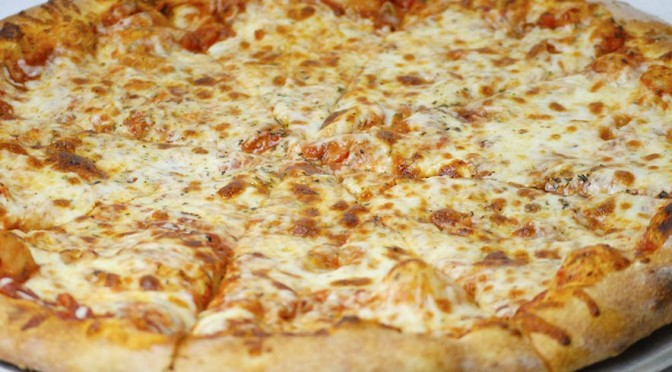
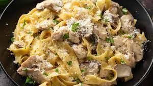

Write your review
Customer Reviews
Shady ahmed--Cairo Branch
★★★★★
It is a top notch Restaurant.I have never tasted a better FETTUCCINE ALFREDO CON POLLO E FUNGHI ,it was more than heavenly.But nothing can top the QUATTRO FORMAGG pizza,it was the best thing i have ever put in my mouth.


Fabian Gabriel--Paris Branch
★★★★★
I had the pleasure of indulging in the exquisite Risotto ai Funghi recently, and it left me speechless! The perfect blend of tender Italian rice, aromatic onions, garlic, and butter, paired with the earthy mushrooms and the irresistible Grana Padano cheese, created a symphony of flavors in every bite. It was a truly sensational culinary experience that I won't soon forget. Simply divine!

Kylie Jenner--Malibu Branch
★★★★★
Prepare to be transported to gastronomic paradise at this Italian gem! The Tartare di Salmone was a revelation—chopped salmon bursting with freshness, marinated in zesty lemon and olive oil. The accompaniments of crisp apples, onions, cucumbers, tomatoes, garlic, and fragrant dill elevated each bite to perfection. Equally delightful was the Linguine ai Frutti di Mare, a heavenly medley of calamari, shrimps, salmon, sea bass, garlic, and tomato sauce atop al dente pasta. And for a refreshing finale, the Macedonia di Frutta Fresca was a symphony of seasonal fresh fruits—a vibrant, juicy delight. An unforgettable culinary experience that will leave you craving more!